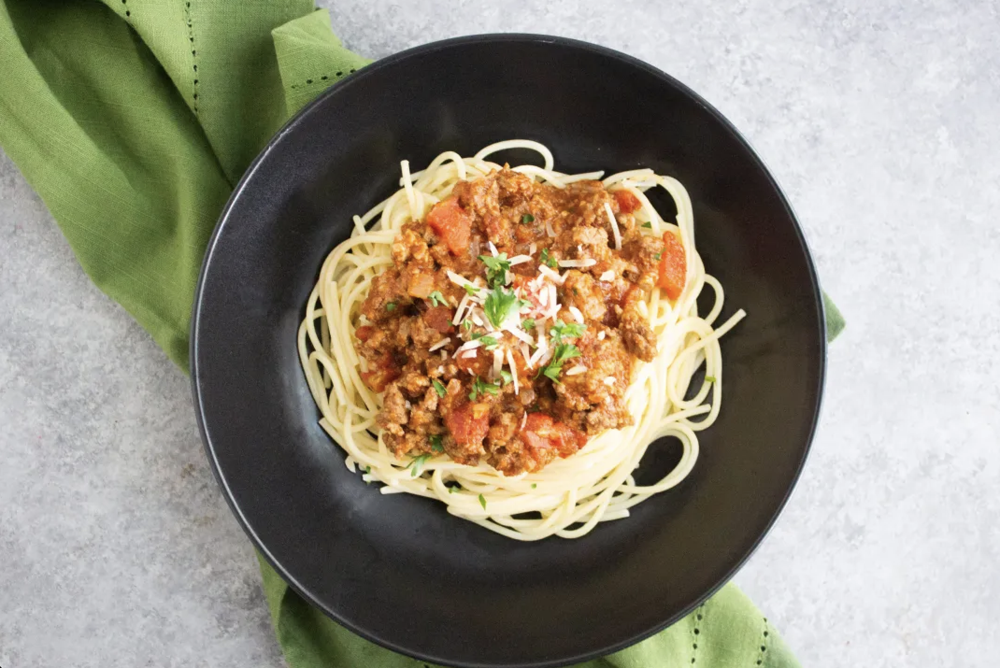

Spaghetti

I haven't had this in a while, but it's a good dish when you are too lazy to cook
Ingredents
- Pasta
- Store-bought Spaghetti Sauce
Steps
- Boil the water in a pot with medium heat
- Add pasta into the pot
- Read the label behind the package and follow their time instruction. It can be from 5 mins to 10 mins
- After the pasta has cooked, heat the store-bought sauce onto the pan
- After 1 min, add cooked pasta onto the pan
- mix it up for 1 min and turn off the heat
- plate your dish and enjoy !